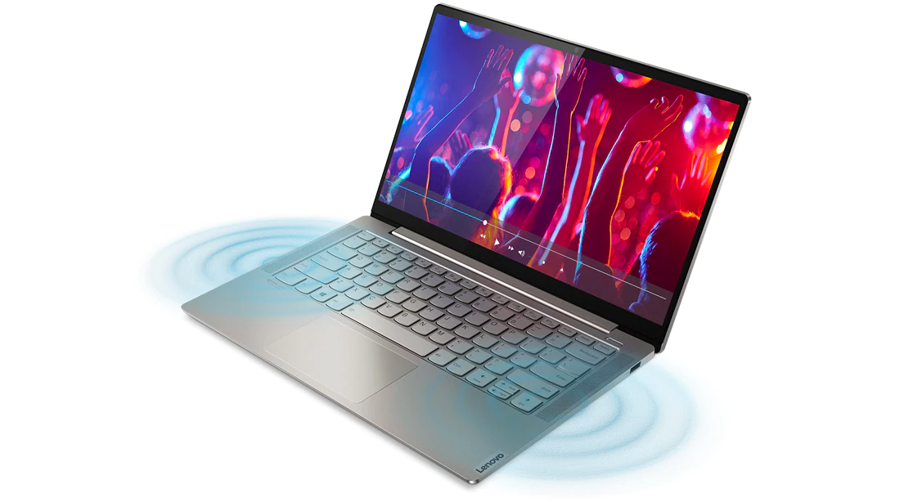

Pomysłowe technologie dla wszystkich
Lenovo poszerza zakres możliwości w nowych laptopach Yoga opracowanych wspólnie z firmą Intel® i wyposażonych w funkcje sztucznej inteligencji. Teraz możesz mówić do urządzenia i nim sterować z drugiego końca pokoju. Oglądać wideo o podwyższonej jakości w programie Windows Media Player. Unikać zmęczenia oczu dzięki wyświetlaczowi, który automatycznie zmniejsza natężenie światła niebieskiego odpowiednio do pory dnia. A to jeszcze nie wszystko.
Sztuczna inteligencja i zdrowy rozsądek
Zaawansowany procesor Intel® Core™ 10. generacji do urządzeń mobilnych i utraprzenośny laptop Yoga S740 dostosowują się do Twoich potrzeb i stylu użytkowania. Razem tworzą rozwiązanie bardziej intuicyjne i osobiste, którego sztuczna inteligencja dynamicznie reaguje na Twoje działania i optymalizuje żywotność baterii.

Potrzebujesz czegoś? Wystarczy poprosić.
Yoga S740 ma mikrofony dalekiego zasięgu i inteligentne asystentki głosowe Alexę oraz Cortanę. Pomogą Ci złożyć zamówienie, ustawić przypomnienie czy odtworzyć muzykę — wystarczy poprosić z odległości do 4 metrów. To kolejny przykład przewagi, jaką daje Ci Yoga S740.
Aby uzyskać więcej informacji o Cortanie, kliknij tutaj , a w celu uzyskania dodatkowych informacji o Alexie, kliknij tutaj.
Aby uzyskać więcej informacji o Cortanie, kliknij tutaj , a w celu uzyskania dodatkowych informacji o Alexie, kliknij tutaj.
Mobilne kino
Wyświetlacz o przekątnej 14 cali w wąskiej jak brzytwa ramce prezentuje imponującą gamę kolorów i szczegółów. Ekran do poziomu 4K VESA400 HDR z jasnością 500 nitów i spektakularną technologią Dolby Vision™ oraz bogaty, wielowarstwowy dźwięk 3D z głośników z Dolby Atmos® oferują niezwykle realistyczną i wciągającą rozrywkę.

Nie ma gniazdka? Nie ma problemu.
Niezależnie od tego, czy pracujesz w terenie, czy też urządzasz sobie serialową noc na sofie, bateria eleganckiego i smukłego Yoga S740 ma w sobie wystarczająco dużo energii — na nawet 15 godzin działania.
Nowy poziom wydajności
Opcjonalna dedykowana karta graficzna NVIDIA® GeForce® MX250 zwiększa dodatkowo możliwości laptopa w zastosowaniach służbowych i rozrywkowych. Korzystaj z nawet 3,5-krotnie większej wydajności w porównaniu ze zintegrowaną kartą graficzną w aplikacjach do edycji zdjęć i wideo, a także z szybszej i płynniejszej gry.

Intuicyjnie i interaktywnie
Kamera na podczerwień ułatwia życie. Wystarczy, że się oddalisz, a oglądany film zostanie automatycznie wstrzymany. Zawartość wyświetlacza laptopa możesz przenieść na dodatkowy monitor ruchem głowy. A to jeszcze nie wszystko. Laptop Yoga S740 reaguje na Twój styl użytkowania, dlatego możesz skupić się na tym, co ważne.
Zna Cię lepiej
Możesz na przykład logować się do niego samym uśmiechem. Dzięki kamerze na podczerwień i funkcji rozpoznawania twarzy Windows Hello możesz zacząć pracę trzy razy szybciej niż wpisując hasło. Jest też świetnie zabezpieczony.

Elegancki styl i mobilność
Yoga S740 ma obudowę z piaskowanego aluminium z wykończeniem wysokiej klasy i łączy w sobie wysoką wydajność z wygodną mobilnością. Ma jedynie 14,9 mm grubości, a waży zaledwie 1,4 kg i jest dostępny w kolorze żelaznoszarym lub z ciepłym, metalicznym mikowym wykończeniem.
Szybki i elastyczny
Yoga S740 ma port Thunderbolt™ 3. Pod względem szybkości przewyższa on port USB 3.0 aż 8 razy, dlatego stanowi najszybszy i najbardziej uniwersalny sposób łączenia z monitorami, stacjami dokującymi i pamięcią masową. Co więcej, służy też jako źródło zasilania. Laptop ma też szybką łączność Wi-Fi 6, dlatego możesz teraz wyświetlać strumieniowe wideo i przeglądać strony internetowe bez porównania płynniej.
Specyfikacja
Procesor
Do Intel® Core™ i7 10. generacji
System operacyjny
Windows 10 Home Wyświetlacz 14” UHD (3840 x 2160) HDR IPS, 500 nitów z Dolby Vision‡ 14” FHD (1920 x 1080) IPS, 400 nitów z Dolby Vision Wąskie ramki ekranu: lewa/prawa: 3,4 mm, górna 6,7 mm, dolna: 11,8 mm ‡ Spodziewana dostępność w modelu HDR z końcem 2019 r.
Pamięć
Do 16 GB pamięci LPDDR4X Bateria Do 15 godzin z wyświetlaczem FHD Do 10 godzin z wyświetlaczem UHD
* Na podstawie testu MobileMark 2014. Czas działania baterii znacznie się różni w zależności od ustawień, sposobu wykorzystania i innych czynników.
Pamięć masowa
Do 1 TB PCIe SSD
Grafika
Intel® HD Iris Opcjonalnie: NVIDIA® GeForce® MX250 2GB
Zabezpieczenia
Kamera na podczerwień do logowania się bez użycia rąk
Dźwięk
Dolby Atmos® Speaker System Mikrofony dalekiego zasięgu
Asystenci cyfrowi
Cortana Alexa†
† Spodziewana dostępność z końcem 2019 r. Tylko na wybranych rynkach.
Kamera
720p
Wymiary (szer. x wys. x głęb.)
322,3 mm x 212 x 14,9 mm krawędź przednia i 18,1 mm krawędź tylna
Waga
Od 1,4 kg
Opcje kolorystyczne
Iron Grey (żelaznoszary) Mika
Łączność
Intel® Wireless-AC 2x2 Wi-Fi 6 (dostępność z końcem 2019 r.)
Klawiatura
Podświetlana klawiatura
Gniazda
USB-C (USB + DisplayPort + zasilanie + Thunderbolt™ 3) 2 x USB 3.1 (2. generacji, jedno zawsze aktywne) Gniazdo słuchawek/mikrofonu Zasilanie Dane techniczne mogą zależeć od regionu
Dane techniczne mogą zależeć od regionu
Specyfikacja

- Zasilanie
- USB 3.1 (Gen 2, zawsze aktywny)
- USB-C (USB + DisplayPort + zasilanie + Thunderbolt™ 3)
- Gniazdo słuchawek/mikrofonu
- USB 3.1 (Gen 2)